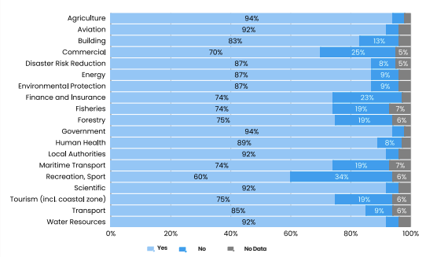

Sources de données climatiques et contrôle qualité avec agrometflow¶
Ce site reprend les axes du support de formation et les réorganise pour un usage en formation : lecture rapide dans le navigateur, démonstrations exécutables via Binder, et exercices guidés sans installation lourde sur les machines des apprenants.
Ce que couvre la formation¶
1. Importance des données climatiques
Sans données climatiques fiables, les décisions agronomiques (semis, fertilisation, irrigation, alerte sécheresse) deviennent incertaines.

Message clé : qualité des décisions = qualité des données + qualité du contrôle qualité.
2. Typologies de données
Observations in situ, télédétection, réanalyses et projections climatiques.
Le fil directeur : comprendre ce que chaque famille apporte et où sont ses limites.
3. Infrastructures d'accès
GHCN-D, GSOD, NASA POWER, CHIRPS, IMERG, ARC2, ERA5, ERA5-Land, MERRA-2 et autres produits déjà présents dans agrometflow.
4. Contrôle qualité
Chaîne QC complète : détection, vérification à la source, correction traçable, relance des tests, ajout des flags.
Parcours pédagogique proposé¶
Étape 1 · Importance des données climatiques
Poser l'enjeu métier : une donnée inadaptée ou non contrôlée peut induire un mauvais diagnostic agroclimatique.
Étape 2 · Typologies de données
Présenter les typologies de sources et les compromis : couverture, résolution, biais, métadonnées, disponibilité opérationnelle.
Étape 3 · Infrastructures d'accès
Montrer comment agrometflow référence déjà plusieurs produits utiles pour la pluviométrie, la température et l'analyse agroclimatique.
Étape 4 · Contrôle qualité
Introduire la chaîne QC complète : détecter, vérifier à la source, corriger de manière traçable, relancer les tests.
Étape 5 · Étude pratique et discussion métier
Faire manipuler des notebooks courts, puis comparer ce qui est acceptable pour le suivi saisonnier, le conseil agricole, la recherche et la calibration de modèles.
Messages clés¶
Approche hybride recommandée
Les données satellitaires sont indispensables pour la couverture globale, mais elles ne remplacent pas les stations. La bonne pratique reste l'approche hybride : stations + satellite + réanalyse + correction locale des biais.
- Les observations in situ restent la référence, mais souffrent souvent de faible densité et de problèmes de métadonnées.
- Les produits satellitaires améliorent la couverture spatiale, mais gardent des biais régionaux, saisonniers et liés au type de pluie.
- Les réanalyses offrent une série cohérente et complète, mais leur résolution et leurs biais doivent être explicitement discutés.
Format de séance conseillé¶
| Durée | Contenu |
|---|---|
| 30 min | Cadrage sur les familles de données climatiques |
| 30 min | Portails et produits utiles en Afrique centrale et de l'Ouest |
| 45 min | Démonstration agrometflow avec Binder |
| 45 min | Exercices en petits groupes et restitution |
Connexion instable ?
Privilégiez les notebooks 00-02 (hors ligne) et gardez le notebook 03 (NASA POWER) pour la démonstration magistrale.
Raccourcis vers les notebooks¶
| Notebook | Objectif | Niveau | Mode |
|---|---|---|---|
| 00 · Parcours sources climatiques | Lien entre le cours et les catalogues internes d'agrometflow | débutant | hors ligne |
| 01 · Explorer les sources agrometflow | Comparer produits, variables et liens utiles | débutant | hors ligne |
| 02 · Contrôle qualité journalier | Comprendre les flags à partir d'une série simple | intermédiaire | hors ligne |
| 03 · Démarrage NASA POWER | Premier téléchargement réel sur un point au Cameroun | intermédiaire | internet requis |